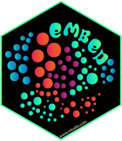

library(tidymodels)
library(ongoal)
tidymodels_prefer()
glimpse(season_2015)
#> Rows: 8,915
#> Columns: 13
#> $ on_goal <fct> no, no, yes, no, yes, no, no, yes, no, no, no, yes, no…
#> $ period <int> 1, 1, 1, 1, 1, 1, 1, 1, 1, 1, 1, 1, 1, 1, 1, 1, 1, 1, …
#> $ game_seconds <dbl> 13, 36, 47, 92, 99, 125, 179, 220, 252, 309, 413, 427,…
#> $ strength <fct> even, even, even, even, even, even, even, even, even, …
#> $ home_skaters <dbl> 5, 5, 5, 5, 5, 5, 5, 5, 5, 5, 5, 5, 5, 5, 5, 5, 5, 5, …
#> $ away_skaters <dbl> 5, 5, 5, 5, 5, 5, 5, 5, 5, 5, 5, 5, 5, 5, 5, 5, 5, 5, …
#> $ goaltender <fct> marc_andre_fleury, antti_niemi, antti_niemi, antti_nie…
#> $ goal_difference <dbl> 0, 0, 0, 0, 1, 1, 1, 1, -1, -1, 1, 1, 1, 1, -1, -1, 1,…
#> $ shooter <fct> evgeni_malkin, valeri_nichushkin, phil_kessel, beau_be…
#> $ shooter_type <fct> center, right_wing, center, right_wing, center, defens…
#> $ coord_x <dbl> -66, -49, 64, 65, 80, 42, -55, 62, -67, -58, 76, 56, -…
#> $ coord_y <dbl> -11, -21, -31, -21, 13, 31, -19, 15, -9, -16, -8, 25, …
#> $ extra_attacker <dbl> 0, 0, 0, 0, 0, 0, 0, 0, 0, 0, 0, 0, 0, 0, 0, 0, 0, 0, …5 - Feature engineering
Machine learning with tidymodels
General definitions 
Data preprocessing steps allow your model to fit.
Feature engineering steps help the model do the least work to predict the outcome as well as possible.
The recipes package can handle both!
In a little bit, we’ll see successful (and unsuccessful) feature engineering methods for our example data.
Splitting the NHL data 

Validation split 
Since there are a lot of observations, we’ll use a validation set:
Remember that a validation split is a type of resample.
Your turn

Let’s explore the training set data.
Use the function plot_nhl_shots() for nice spatial plots of the data.
Prepare your data for modeling 
- The recipes package is an extensible framework for pipeable sequences of feature engineering steps that provide preprocessing tools to be applied to data.
- Statistical parameters for the steps can be estimated from an initial data set and then applied to other data sets.
- The resulting processed output can be used as inputs for statistical or machine learning models.
A first recipe 
- The
recipe()function assigns columns to roles of “outcome” or “predictor” using the formula
A first recipe 
summary(nhl_rec)
#> # A tibble: 13 × 4
#> variable type role source
#> <chr> <list> <chr> <chr>
#> 1 period <chr [2]> predictor original
#> 2 game_seconds <chr [2]> predictor original
#> 3 strength <chr [3]> predictor original
#> 4 home_skaters <chr [2]> predictor original
#> 5 away_skaters <chr [2]> predictor original
#> 6 goaltender <chr [3]> predictor original
#> 7 goal_difference <chr [2]> predictor original
#> 8 shooter <chr [3]> predictor original
#> 9 shooter_type <chr [3]> predictor original
#> 10 coord_x <chr [2]> predictor original
#> 11 coord_y <chr [2]> predictor original
#> 12 extra_attacker <chr [2]> predictor original
#> 13 on_goal <chr [3]> outcome originalCreate indicator variables 
For any factor or character predictors, make binary indicators.
There are many recipe steps that can convert categorical predictors to numeric columns.
Filter out constant columns 
In case there is a factor level that was never observed in the training data (resulting in a column of all 0s), we can delete any zero-variance predictors that have a single unique value.
Normalization 
This centers and scales the numeric predictors.
The recipe will use the training set to estimate the means and standard deviations of the data.
- All data the recipe is applied to will be normalized using those statistics (there is no re-estimation).
Reduce correlation 
To deal with highly correlated predictors, find the minimum set of predictor columns that make the pairwise correlations less than the threshold.
Other possible steps 
PCA feature extraction…
Other possible steps  
A fancy machine learning supervised dimension reduction technique…
Other possible steps 
Nonlinear transforms like natural splines, and so on!
Your turn
Create a recipe() for the on-goal data to :
- create one-hot indicator variables
- remove zero-variance variables
03:00
Minimal recipe 
Using a workflow 


set.seed(9)
nhl_glm_wflow <-
workflow() %>%
add_recipe(nhl_indicators) %>%
add_model(logistic_reg())
ctrl <- control_resamples(save_pred = TRUE)
nhl_glm_res <-
nhl_glm_wflow %>%
fit_resamples(nhl_val, control = ctrl)
collect_metrics(nhl_glm_res)
#> # A tibble: 2 × 6
#> .metric .estimator mean n std_err .config
#> <chr> <chr> <dbl> <int> <dbl> <chr>
#> 1 accuracy binary 0.756 1 NA Preprocessor1_Model1
#> 2 roc_auc binary 0.753 1 NA Preprocessor1_Model1Your turn
Use fit_resamples() to fit your workflow with a recipe.
Collect the predictions from the results.
05:00
Holdout predictions 


# Since we used `save_pred = TRUE`
glm_val_pred <- collect_predictions(nhl_glm_res)
glm_val_pred %>% slice(1:7)
#> # A tibble: 7 × 7
#> id .pred_yes .pred_no .row .pred_class on_goal .config
#> <chr> <dbl> <dbl> <int> <fct> <fct> <chr>
#> 1 validation 0.00844 0.992 2 no no Preprocessor1_Mod…
#> 2 validation 0.0864 0.914 10 no no Preprocessor1_Mod…
#> 3 validation 0.799 0.201 22 yes yes Preprocessor1_Mod…
#> 4 validation 0.615 0.385 24 yes yes Preprocessor1_Mod…
#> 5 validation 0.787 0.213 31 yes yes Preprocessor1_Mod…
#> 6 validation 0.872 0.128 39 yes yes Preprocessor1_Mod…
#> 7 validation 0.00000000903 1.00 40 no no Preprocessor1_Mod…Your turn
Compute and plot an ROC curve for your current model.
What data are being used for this ROC curve plot?
05:00
Player effects 
It is very important to appropriately validate the effect encoding step to make sure that we are not overfitting.
Recipes are estimated 
Preprocessing steps in a recipe use the training set to compute quantities.
What kind of quantities are computed for preprocessing?
- Levels of a factor
- Whether a column has zero variance
- Normalization
- Feature extraction
- Effect encodings
When a recipe is part of a workflow, this estimation occurs when fit() is called.
Effect encoding results 


nhl_effect_wflow <-
nhl_glm_wflow %>%
update_recipe(nhl_effect_rec)
nhl_effect_res <-
nhl_effect_wflow %>%
fit_resamples(nhl_val, control = ctrl)
collect_metrics(nhl_effect_res)
#> # A tibble: 2 × 6
#> .metric .estimator mean n std_err .config
#> <chr> <chr> <dbl> <int> <dbl> <chr>
#> 1 accuracy binary 0.791 1 NA Preprocessor1_Model1
#> 2 roc_auc binary 0.805 1 NA Preprocessor1_Model1Better and it can handle new players (if they occur).
Fit different recipes 


A workflow set can cross models and/or preprocessors and then resample them en masse.
no_coord_rec <-
nhl_indicators %>%
step_rm(starts_with("coord"))
set.seed(9)
nhl_glm_set_res <-
workflow_set(
list(`1_no_coord` = no_coord_rec, `2_other` = nhl_other_rec,
`3_effects` = nhl_effect_rec, `4_angle` = nhl_angle_rec,
`5_zone` = nhl_zone_rec, `6_bgl` = nhl_behind_rec),
list(logistic = logistic_reg())
) %>%
workflow_map(fn = "fit_resamples", resamples = nhl_val, verbose = TRUE, control = ctrl)Your turn
Create a workflow set with 2 or 3 recipes.
(Consider using recipes we’ve already created.)
Use workflow_map() to resample the workflow set.
08:00